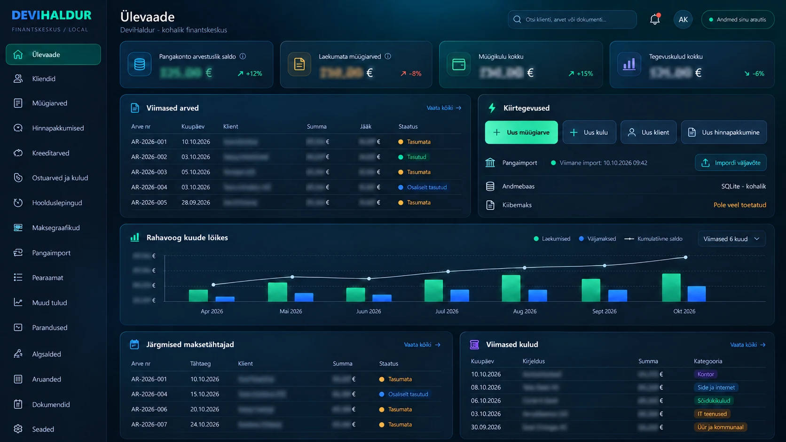

DeviHaldur
FINANTSKESKUS
DeviHaldur on Windowsis kohapeal töötav finants- ja raamatupidamistarkvara. Ühes programmis saan hallata kliente, koostada ja muuta müügiarveid, hinnapakkumisi ning krediiditarveid. Arved saab salvestada PDF-ina, jälgida tasumisi ja arvestada ka osalisi laekumisi.
Ostuarved, igapäevased kulud, hoolduslepingud ja maksegraafikud annavad ülevaate tulevastest kohustustest. Lisaks on olemas muude tulude arvestus, algsaldod, paranduskanded, aruanded ja dokumentide haldus.
Pangatehingud saab tuua sisse CSV-failist. Enne kinnitamist näeb tehingute eelvaadet; programm aitab leida duplikaate ja pakub arvenumbri järgi sobivaid laekumisi. Kinnitatud tehingud kajastuvad deebet- ja krediidikannetena pearaamatus. Andmed säilivad arvutis kohalikus SQLite-andmebaasis.
Edasi on plaanis lisada ka pilvesalvestus, et andmetele oleks lihtsam ligi pääseda ja neid varundada. Ühe võimalusena kaalun salvestuse korraldamist oma homelabis, praegu töötab programm kohalikult arvutis.
Loodud isiklikuks kasutamiseks. Tarkvara ei ole avalikult kättesaadav, juaa.
← Tagasi projektidesse